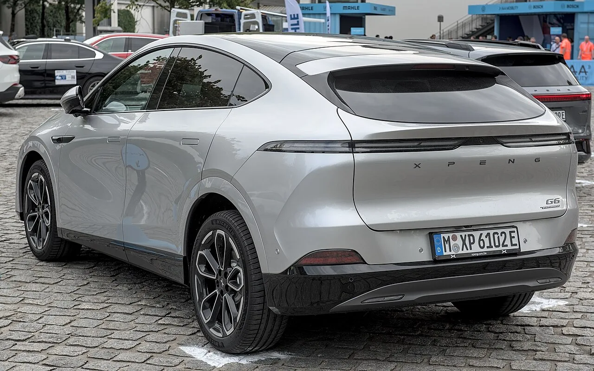

▲ 니오는 7월 30~31일 안후이성 공장에서 현장 점검을 받았다
중국 공업정보화부가 공장에 예고 없이 들어갔습니다.
서류만 본 것이 아닙니다.
현장에서 차와 배터리팩을 무작위로 골라 가져갔습니다. 시험 기관에 보내 국가표준을 맞추는지 직접 확인하기 위해서입니다.
1. 무엇을 봤나
중국 공업정보화부(MIIT)가 7월 30~31일 니오·체리·JAC를 현장 점검했습니다. 세 곳 모두 안후이성에 생산 거점을 둔 업체입니다.
| 항목 | 내용 |
|---|---|
| 제품 안전 보증 능력 | 안전을 담보할 체계가 실제로 작동하는가 |
| 생산 일관성 | 인증받은 사양대로 계속 만들고 있는가 |
| 지능형 커넥티드카 안전 | 자율주행·연결 기능의 안전 확보 능력 |
| 설계·개발·제조 능력 | 생산 허가 조건을 유지하고 있는가 |
📍 '생산 일관성'이 핵심어다
자동차는 인증을 받은 뒤에도 계속 만들어집니다. 인증 시점의 시험차와 실제 양산차가 같은지는 별개 문제입니다. 원가를 낮추려 부품을 바꾸거나 공정을 줄이면 인증 사양과 벌어질 수 있습니다. 생산 일관성 점검은 바로 이 간극을 보는 절차입니다.
2. 방식이 달랐다
이번 점검에서 눈에 띄는 것은 방법입니다. 서류 검토에 그치지 않고, 현장에서 샘플 차량과 배터리팩을 무작위로 골라 가져갔습니다.
그리고 관련 기관에 보내 국가표준 적합성 시험을 맡겼습니다. 업체가 제출한 자료가 아니라 실제 생산품을 직접 검증하겠다는 것입니다.

▲ 체리도 이번 점검 대상에 포함됐다 ⓒ Wikimedia Commons
업체가 준비할 시간을 주지 않는 방식이기도 합니다. 예고 없이 들어가 현장의 물건을 가져가면, 평소 상태가 그대로 드러납니다.

▲ 일주일 전에는 광둥성에서 샤오펑과 GAC 아이온이 같은 점검을 받았다 ⓒ Wikimedia Commons
3. 일주일 만에 두 번째
| 시점 | 지역 | 대상 |
|---|---|---|
| 7월 중순 | 광둥성 | GAC 아이온, 샤오펑 |
| 7월 30~31일 | 안후이성 | 니오, 체리, JAC |
일주일 간격으로 지역을 옮겨가며 이뤄졌습니다. 특정 업체를 겨냥한 조치라기보다 업계 전반을 훑는 방식에 가깝습니다.
이 점에서 성격이 달라집니다. 사건이 터진 뒤 대응하는 일회성 조사였다면 대상이 한정됐을 것입니다. 지역을 바꿔가며 반복된다는 것은 상시 감독 체계로 자리 잡는 중이라는 신호입니다.
4. 왜 지금인가
배경에는 배터리 안전 문제가 있습니다. 중국 전기차 시장은 규모가 세계 최대인 만큼 사고 사례도 누적돼 왔습니다.
여기에 또 하나의 맥락이 겹칩니다. 지난 3년간의 극심한 가격 경쟁입니다. 값을 계속 내리려면 원가를 계속 깎아야 하고, 그 압력은 부품과 공정으로 내려갑니다.
📍 가격 경쟁과 품질 감독은 이어져 있다
당국이 소모적 경쟁을 억제해 온 것과 이번 점검은 별개의 사안처럼 보이지만, 같은 문제의 앞뒤에 가깝습니다. 원가 압박이 길어지면 인증 사양과 양산품의 간극이 벌어질 위험이 커지기 때문입니다. 생산 일관성을 집중적으로 보는 것도 이 지점을 겨냥한 것으로 읽힙니다.

▲ 국내로 들어오는 차는 국내 인증 절차를 따로 거친다 ⓒ Wikimedia Commons
5. 국내에서 볼 지점
중국산 전기차와 배터리는 국내에도 들어와 있습니다. BYD가 국내에서 승용차를 팔고 있고, 중국산 배터리는 여러 브랜드의 차량에 쓰입니다.
이번 점검은 중국 내수 기준의 절차입니다. 국내에 들어오는 차는 국내 인증 절차를 따로 거칩니다. 두 체계는 별개입니다.
다만 참고할 흐름은 있습니다. 생산 일관성 점검은 어느 시장에서나 중요한 주제입니다. 국내에서도 자동차 안전기준 적합 여부는 인증 시점뿐 아니라 이후의 결함 조사와 리콜 제도로 관리됩니다.
6. 정리
중국 공업정보화부가 7월 30~31일 니오·체리·JAC의 안후이성 공장을 현장 점검했습니다. 제품 안전 보증 능력과 생산 일관성이 대상이었습니다.
서류가 아니라 실물을 봤습니다. 현장에서 샘플 차량과 배터리팩을 무작위로 수거해 국가표준 적합성 시험을 맡겼습니다.
일주일 전에는 광둥성에서 GAC 아이온과 샤오펑이 같은 점검을 받았습니다. 지역을 옮겨가며 반복된다는 점에서, 일회성 대응이 아니라 상시 감독으로 굳어지는 흐름으로 읽힙니다.